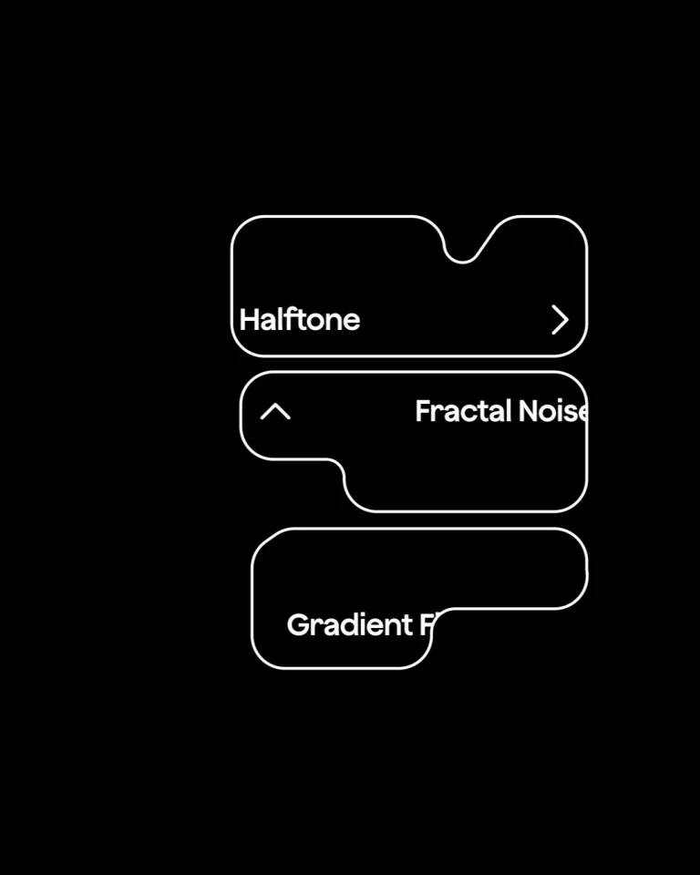
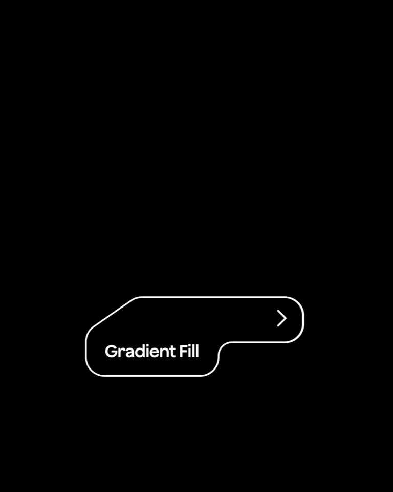
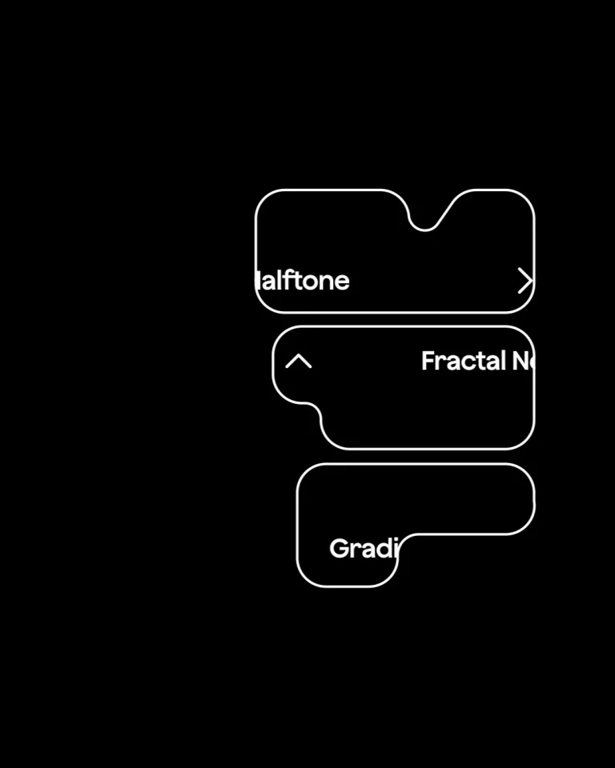
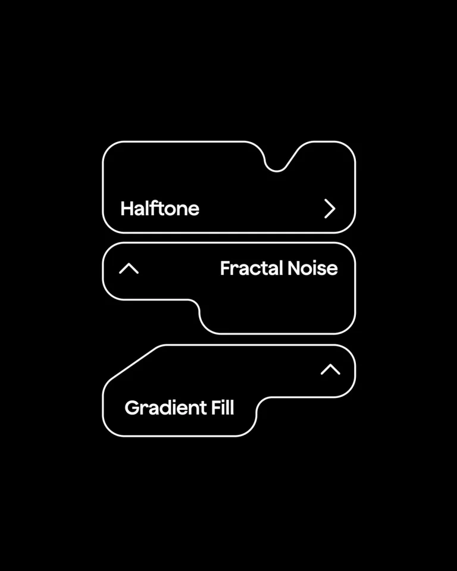

Modyfi / V361
界面按钮排列 · 10.7 秒
让三个带缺口的效果按钮像可拼合的模块一样拆散再归位；顺序从底项开始，保留紧密的竖向关系。
构图与编排 可播放 · 可替换内容
整体编排规则示例
查看 HTML 源码
<!doctype html><html lang="zh-CN"><meta charset="utf-8"><meta name="viewport" content="width=device-width,initial-scale=1"><title>界面按钮排列 · 10.7 秒 · sequence</title><style>html,body{margin:0;width:100%;height:100%;overflow:hidden;background:#000000}canvas{display:block;width:100%;height:100%;object-fit:contain}</style><body data-mode="sequence"><canvas width="1000" height="600"></canvas><script src="data.js"></script><script src="common.js"></script><script src="scene.js"></script><script src="bridge.js"></script></body></html>画面元素不规则描边按钮效果名折角方向箭头
MOTION LANGUAGE
动作与构图
局部动作 · 构图规则
01
不规则轮廓要为相邻项留口
每个按钮都有局部凹口与斜边，堆叠时保持相近宽度和小间距。标签贴近轮廓平直的区域，方向箭头留在另一端。
02
离场一起，回场错开
离场一起，回场错开规则示例
查看 HTML 源码
<!doctype html><html lang="zh-CN"><meta charset="utf-8"><meta name="viewport" content="width=device-width,initial-scale=1"><title>界面按钮排列 · 10.7 秒 · sequence</title><style>html,body{margin:0;width:100%;height:100%;overflow:hidden;background:#000000}canvas{display:block;width:100%;height:100%;object-fit:contain}</style><body data-mode="clip" data-start="1" data-end="5.5"><canvas width="1000" height="600"></canvas><script src="data.js"></script><script src="common.js"></script><script src="scene.js"></script><script src="bridge.js"></script></body></html>三个按钮短促滑出后，Gradient Fill 先返回，再加入 Fractal Noise 与 Halftone。黑底与白色细轮廓保持极简，移动时标签和箭头跟随容器。
03
更换标签保留三项容量
适合短效果名或工具名；内容变长时优先加宽模块，不让标签碰到凹口。循环开始与结束使用同一排列。
SEQUENCE
段落与节奏
点击段落，定位到上方编排示意。




画面参考 · 离散静帧
KEEP THE RELATIONSHIPS
制作其他主题
- 替换三个短工具名；保留底→中→顶的组装顺序。
制作约束
不规则描边按钮 / 效果名 / 折角 / 方向箭头
- 每个按钮都有局部凹口与斜边，堆叠时保持相近宽度和小间距。标签贴近轮廓平直的区域，方向箭头留在另一端。
- 三个按钮短促滑出后，Gradient Fill 先返回，再加入 Fractal Noise 与 Halftone。黑底与白色细轮廓保持极简，移动时标签和箭头跟随容器。
- 适合短效果名或工具名；内容变长时优先加宽模块，不让标签碰到凹口。循环开始与结束使用同一排列。